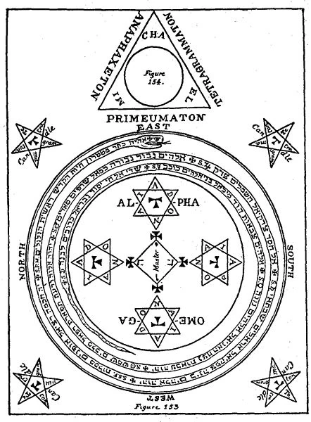
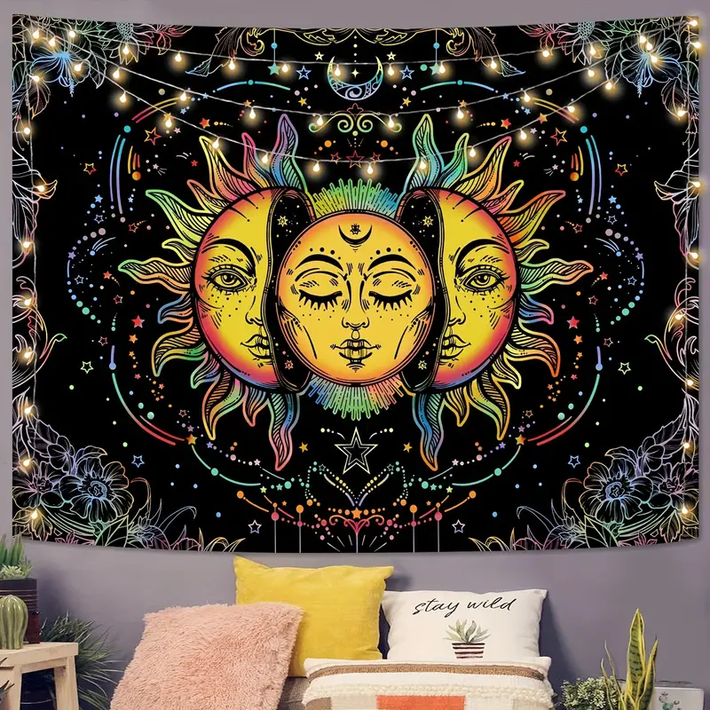
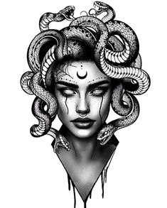
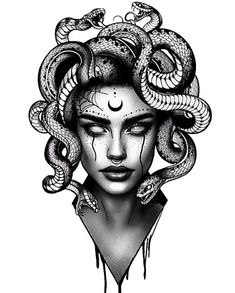

|

IntroductionIn this exploration, I will address the various practices that modern society is increasingly involved with and offer my personal perspective on why individuals engage in these practices. I will also discuss what people may hope to gain if they succeed in such endeavors, as well as the potential costs of their success. Furthermore, I will explore the diverse types of spiritual practices and examine how the influence of spirits varies depending on one's level of commitment. My predictions regarding certain individuals or groups are often based on symbolism, much like how one can predict that a person is Christian if they attend church, claim religious affiliation, or visibly display a cross through tattoos or necklaces. Similarly, in other traditions, we can often identify someone as Muslim by their attire. Ironically, we can also discern which individuals involved in modern occultism are aligned with particular deities or spirits simply by observing their dress, jewelry, tattoos, and other forms of symbolism. A key difference between these groups and religious individuals is that while religious adherents often acknowledge the meaning behind their modesty or symbols, those involved in occult spirituality frequently fall into a delusion. They may reinterpret these symbols and consider themselves to be gods or goddesses. This is likely due to the fact that individuals lacking a strong spiritual foundation often first encounter these deities and practices through the use of psychedelic substances such as Ayahuasca, DMT, and mushrooms—the same drugs that can be traced back to ancient Greece, where philosophers and traditions used them for the purpose of gaining knowledge and revelation. Unfortunately, in modern times, people often use these substances merely for pleasure or to experience a dopamine rush. Some even claim that after experiencing the thrill of activities like skydiving, they lose interest in other pursuits because nothing else can provide the same excitement. As a result, they turn to drugs. Others, after realizing the harmful effects of drugs, shift to practices such as tarot reading or amateur-level spirit summoning—drawing a pentagram, lighting candles—seeking to recapture the same euphoric feeling. Some have had encounters with entities during their psychedelic trips and attempt to reconnect with them through these spiritual practices. In the course of this analysis, I will delve deeper into identifying these spirits, examining how they are represented, and discussing why they are detrimental to us. My observations are based on people I have met, as well as sources specifically focused on these spirits and their associated practices. SpiritualitySpirituality, at its core, is the pursuit of meaning, purpose, and connection beyond the physical realm, often involving a relationship with the divine, a higher power, or a deeper sense of self. It transcends religious doctrines, focusing on personal experiences, inner transformation, and the exploration of the unseen forces that shape life. While spirituality can be expressed through religious practices, it also encompasses individual quests for understanding life’s mysteries, fostering a sense of interconnectedness with the universe and the pursuit of inner peace and enlightenment. In recent years, modern spirituality has shifted towards a more self-serving approach, where individuals engage with spiritual practices not out of reverence for the entities they invoke but rather for personal gratification, inspiration, or thrill-seeking. This trend, often detached from any genuine spiritual commitment, highlights a troubling reality—many people use spirituality for their selfish needs, unaware of the deeper consequences of their actions. The Use of Spirituality for Personal GainA growing number of people are turning to spiritual practices, such as ritualistic invocations, for purely personal benefits. Artists and creatives, for instance, often incorporate these rituals into their process to find inspiration. They view spiritual entities as tools for unlocking creative flow, using invocations to "open themselves" to supernatural forces that may enhance their work. This phenomenon has been explored in studies examining the link between altered states of consciousness and creativity. For example, a study conducted by Kuiken et al. (2012) highlighted how certain meditative and ritualistic practices could enhance creative thought processes, though the participants often engaged in these practices without any religious or spiritual commitment. This trend demonstrates how spirituality is increasingly being used as a means to an end, rather than for genuine connection with spiritual forces. The sensation of becoming "one" with a spirit during a ritual, where an individual momentarily feels possessed or overtaken by an external force, is often sought out for the physical and emotional high it brings. This thrill, as suggested by research on altered states of consciousness by Winkelman (2010), can be compared to the effects of substances like psychedelic drugs, which induce similar sensations of transcendence and unity. However, just as many users of psychedelics seek the experience rather than the spiritual insight, many who practice these rituals are motivated by the intense feelings they produce, rather than a genuine connection to the spiritual entities involved. Casual Engagement with Occult Practices and RitualsBeyond the search for inspiration, many people treat spiritual practices as casual or even playful activities. Occult board games, such as the Ouija board, and visits to abandoned, haunted locations are increasingly popular among thrill-seekers, especially younger demographics. A study by Bader et al. (2017) explored how many participants in these activities engaged in them purely for entertainment or to satisfy curiosity, without understanding the potential spiritual consequences. These individuals often view such practices as harmless fun, failing to recognize that they are still engaging in rituals designed to invite spiritual entities into their lives. This casual approach is not without consequences. As demonstrated in several case studies involving the misuse of occult practices, individuals often unintentionally establish relationships with spiritual forces. An example of this can be seen in the study of paranormal beliefs by Irwin (2009), which revealed that many who dabble in occult practices, even for fun, report experiencing unintended supernatural phenomena afterward. This suggests that, despite their casual intentions, these individuals may be unwittingly forming spiritual connections they do not fully comprehend. Symbolism and Unintentional Spiritual AssociationsOne of the most concerning aspects of modern-day spirituality is the unintentional use of spiritual symbolism, which further entangles individuals in relationships with spirits they did not intend to connect with. In many cases, people unknowingly adopt the same symbols and imagery used by true followers of specific entities. Tattoos, clothing, and decorative items bearing the likenesses of these spirits are often purchased without understanding their deeper meanings. This trend was documented by Partridge (2004) in his study on the commodification of spirituality, which pointed out that many people consume spiritual symbols as part of mainstream culture, without realizing the spiritual implications of doing so. These symbols, once worn or displayed, can unintentionally invite spiritual connections. A study by Hanegraaff (1996) on New Age spiritual practices noted that, although many participants viewed their engagement with spiritual symbols as superficial, they nonetheless began to experience a sense of spiritual attachment to the entities these symbols represent. The symbolism, in these cases, becomes a bridge between the individual and the spiritual world, often without the person even realizing it. The Role of Psychedelics in Modern SpiritualityPsychedelic drugs have long been associated with spiritual experiences, particularly in indigenous and shamanic traditions. However, in modern contexts, psychedelics are increasingly used as a means of "spiritual exploration" without a clear commitment to the entities or traditions involved. A comprehensive review by Carhart-Harris and Nutt (2017) on the effects of psychedelics found that while many users report profound spiritual experiences, the majority are motivated by personal growth or the pursuit of altered states rather than any deeper spiritual connection. In many cases, users of psychedelics report feeling connected to otherworldly entities or spirits, but these relationships are often temporary and seen as tools for personal development rather than genuine spiritual devotion. Similar to the trend of using rituals for thrill-seeking, many who experiment with psychedelics do so for the experience itself, often leading to shallow and transitory relationships with the spiritual world. PractionersIn this section, I will discuss the behaviors and lifestyles of individuals I’ve encountered personally, as well as those I’ve observed through social media. I’ll make assumptions about their lives based on symbols and spiritual characteristics I recognize. This is similar to forming an opinion about someone based on a single visible detail, such as a cross necklace or a tattoo of a religious symbol. For example, if we see someone wearing a cross or displaying Bible verses, we might assume they attend church regularly, read the Bible, and, if their faith is true, believe they will live with God forever. With that context in mind, I will list symbols that I often notice in tattoos, jewelry, social media profiles, and home decorations. 

 

First Group: These are some of the most common symbols today seen in the New Age community. It’s important to note that not everyone who displays or tattoos these symbols is actively practicing the associated rituals, or even understands the entities behind them. They could simply be following trends set by friends, celebrities, or family members. However, ignorance of the spiritual world doesn't offer protection. Intentions may not matter—symbols can still act as invitations for spirits to enter someone’s life. I’ll group people into three categories for my analysis. The first group consists of individuals who carry these symbols without understanding their spiritual significance. Most often, they are influenced by movies, video games, society, or idols they prioritize in their lives. This makes them particularly vulnerable to the influence of spirits associated with these symbols. For example, those with zodiac tapestries or symbols of the sun god Inti usually choose these items for their visual appeal. These individuals are also more likely to get involved in movements such as BLM or LGBTQ advocacy and often have piercings on their nose, lips, or belly button. While this group may not go as far as tattooing symbols like the head of Medusa or the Eye of Horus, they might have flower tattoos or a Mandala tapestry. The spirits attracted by these symbols typically attack this group through depression and social anxiety. It’s important to note that these spirits may not only influence thoughts and behavior but could also possess their victims outright. Occult texts, such as The Lesser Key of Solomon, describe how spirits enter their victims' dreams, bringing nightmares, fear, or dangerous life decisions. These spirits can drain energy, leaving the person fatigued, depressed, and unmotivated. In occult astrology, the demon Sorath represents the dark side of solar energy. Sorath is chaotic and destructive, and those who unknowingly invoke solar symbols may invite his harmful influence, leading to illness, mental instability, or a general sense of impending doom. Additionally, these spirits may act on behalf of their master, influencing people to follow certain celebrities or consume their content excessively, leading to unhealthy attachments, such as extreme idolization to the point of fainting at concerts. Second Group: The second group includes everything mentioned about the first group but with added elements like psychedelic drug use or minor attempts at spiritual practices, such as drawing a pentagram or playing with a Ouija board. These individuals have experienced or witnessed something through these activities, but they aren’t fully committed to any spiritual path. Most of their experiences come through psychedelic drugs, and even though they may encounter certain deities, they often form personal interpretations of these experiences without looking into the religious or historical context behind them. For example, I once met an amazing person (whose name I won’t reveal for privacy reasons), and she graciously allowed me to study her experiences. This is particularly interesting because she grew up as a Christian, but a college professor had a significant influence in her shift towards New Age spirituality. I will explore her case in more detail later, after discussing the general impact of spirits on this second group. The connection between spirits and this group is stronger compared to the first group because they have already had experiences with these entities, either through drugs or spiritual practices, which deepens the influence. In addition to the challenges faced by the first group, individuals in this group are more likely to develop destructive habits, such as drug addiction, overuse of energy drinks like Monster, and alcohol abuse. They often try to stay busy and distracted, as they find it difficult to cope with the voices in their heads or the thoughts that arise when they are alone. This group might also start, but never finish, spiritual practices like Tarot reading, and many have a strong attachment to the spirits linked to the Zodiac. One common misconception in this group is that after attempting a spiritual practice—such as Tarot reading, drawing a pentagram at midnight, or astral projection—they assume that if they don’t feel immediate results, the ritual didn’t work. They may dismiss the experience and move on to the next thing. However, that’s not how the spiritual world operates. Once someone engages in a practice, even as an amateur, they are effectively agreeing to its terms and conditions. Whether or not they experience something right away, they’ve opened the door to the forces connected to that ritual, and unless they know how to close it, the influence remains. Many in this group don’t know how to close these spiritual doors, which allows the spirits to change various aspects of their lives—such as how they dress, their political views, self-image, and general worldview. Women in this group may be tempted to start OnlyFans or express their nudity in other ways, often justifying it as art. Depending on which goddess or spirit they’ve connected with through their practices, the temptation may even extend to more extreme behaviors, like sleeping with married couples or participating in swinging, with the intent of damaging or corrupting the marriage. However, it’s important to note that not all women involved in these practices engage in such actions. Our free will is powerful against spirits, and they often manipulate existing desires within us rather than forcing their way in. For example, if a feminist is involved in these practices, spirits might use her passion for equal rights and twist it into a general hatred towards men. These entities are crafty and fully aware of the impact they can have, but they can only influence us if we entertain the ideas they plant. They cannot override our free will. That’s why symbols, invocations, and prayers exist—they are like legal agreements that give spirits the right to influence someone’s life. If someone unintentionally “checks that box,” the spirits have the right to begin their work. This group is also drawn to symbols like the head of Medusa and serpents. They are more likely to have tattoos or decorations featuring snakes, or even keep them as pets. While they are not atheists, they believe in being connected to the universe and that we are all gods with divine potential within us. Their spiritual beliefs are often a blend of many different religions, sometimes even incorporating elements of Christianity. They may briefly practice yoga and meditation, adding to their mix of spiritual explorations. Third Group: The third group shares characteristics with the first and second groups but with a much deeper awareness and familiarity with ancient texts and practices dedicated to the spirits they aim to connect with. These individuals have the potential to become influential figures, like Aleister Crowley or John Dee, in the pagan world, potentially starting their own practices or even religions if they are favored by the spirits they serve. What sets them apart is their commitment to their craft. In addition to their experiences with psychedelic drugs and minor rituals, they have conducted successful rituals based on what they've studied and encountered powerful spiritual forces. However, this doesn't mean they are immune to the negative influence of these spirits. While this group includes a wide range of individuals, from the average person to politicians, musicians, actors, and other celebrities, they all share a common vulnerability: being human. Like all humans, they have desires that they will go to great lengths to fulfill. These desires include wealth, alcohol, women, fame, power, knowledge, and more. A strong historical example of this is John Dee. John Dee was a devout Christian who believed in Jesus as both the Son of God and God Himself. Despite his faith, his insatiable thirst for knowledge led him down a dangerous path. According to his diaries, Dee partnered with Edward Kelly, who claimed to have the ability to communicate with spirits or angels through a shew-stone. Dee, eager to expand human knowledge with the help of these “angels,” began working closely with Kelly. Initially, Dee believed his intentions were pure, but as the spirits revealed more “secret knowledge,” they began to make demands. One such demand involved Dee and Kelly swapping wives. Kelly, sensing something was wrong, grew suspicious of these so-called angels, but Dee, driven by his desire for hidden knowledge and treasures, complied. At one point, the angels themselves had to remind Dee that there was more to life than material wealth. This example mirrors the experiences of modern occultists and those who practice pagan rituals. Many are driven by a desire to advance their careers, gain wealth, or satisfy other selfish needs. Blinded by these desires, they are often willing to do whatever it takes to achieve their goals, no matter the moral cost. From a biblical perspective, these supernatural forces, often seen as demons, are half-angel, half-human beings, remnants of the Nephilim. These spirits, as described in biblical texts, seek revenge on God by corrupting His creation—humans. Every time they cause humans to fall below their potential or commit sinful acts, they believe they score a victory against God. This may explain why we see so many celebrities, after achieving fame and wealth, suddenly facing allegations of committing unspeakable acts—things that even a desperate person might hesitate to do, let alone someone already immersed in wealth. It’s a trap set by these spirits to ensnare humans, exploiting our greatest weakness: the flesh. The more we live for material desires, the more vulnerable we become to these spiritual forces. Unfortunately, many people today have embraced and normalized these spirits, no longer viewing them as enemies. In fact, in many religions, these entities are revered and worshipped as gods and goddesses. In summary, the third group represents individuals who are deeply engaged in their spiritual practices, often with dangerous consequences. Their desires drive them to interact with forces that not only grant them temporary gains but also lead to deeper entanglements with malevolent spirits. The Spiritual Journey of My FriendMy friend, who graciously allows me to study her experiences, began her journey with a Christian background. However, her worldview shifted after encountering a college professor who influenced her to abandon her faith. She now identifies as a "spiritual person" and distances herself from organized religion. Despite her claim to have left religion behind, I find it fascinating that her new path has led her to connect with deities and spiritual practices that bear strong resemblances to religious rituals. This contradiction reflects a broader pattern among many in modern spirituality, where the rejection of traditional religion often leads to the adoption of alternative spiritualities with strikingly similar structures. Exploring New Rituals and SubstancesAfter leaving Christianity, my friend began experimenting with rituals such as drawing pentagrams surrounded by candles in the middle of the night. Although she described these rituals as unsuccessful, her encounters through psychedelic substances like mushrooms were, in her words, “eye-opening.” During these experiences, she claims to have communicated with Krishna—a deity from Hindu tradition. Initially, her psychedelic journeys were chaotic and involved interactions with snake-like demigods called Nagas, but she described Krishna as a comforting presence amidst the turmoil. Interestingly, she does not identify as a follower of Hinduism. Instead, she views herself as an eclectic blend of Jainism, Wicca, and Hermetic cultures. Like many in the first group I described earlier, she cherry-picks elements from various religions, blending them into a personalized belief system. She also redefines her experiences, choosing to interpret the entities she encounters as "negative and positive energies" rather than gods or goddesses. This tendency to dismiss the historical and cultural context of spiritual entities and reinterpret them according to one’s own perspective is a hallmark of modern New Age practices. Connections to The Satanic TempleDespite claiming not to believe in Satan as a deity, my friend frequently visits The Satanic Temple and even encourages others to join her. She has successfully influenced at least one of her girlfriends to do so. She insists that The Satanic Temple is purely a political movement aimed at improving society and has no spiritual significance. Yet, her actions—bringing others to the temple—mirror the behavior of religious evangelists who guide others to their places of worship. This is an example of how individuals often fail to recognize that their actions align with the principles of the very spiritual forces they claim to reject. By rejecting traditional definitions and relying on personal reinterpretations, they inadvertently fulfill the agendas described in ancient texts about these entities. Isolation and Thrill-Seeking in the DesertAs part of her spiritual journey, my friend spends significant time in isolation. She enjoys visiting abandoned buses in the desert, even spending nights in them. On one such night, she and a friend heard aggressive banging on the bus. While they were unharmed, the incident raises the possibility of either a spiritual encounter or a dangerous human presence. Thrill-seeking, like exploring abandoned buildings or staying in isolated locations, is often seen as harmless fun. However, such activities can serve as gateways for spiritual encounters, intentional or not. The most intriguing detail she shared is her habit of wandering in the woods completely naked. This behavior, combined with her alter ego—a character she expresses through a dedicated Instagram account featuring a nymph as her profile picture—suggests a deeper spiritual influence. Nymphs, in Greek mythology, are consorts of the god Pan, who is worshipped in natural settings rather than temples. Pan’s followers often connect with him in forests and caves. I theorized that her rituals and practices may have opened a door to a nymph spirit, influencing her affinity for the wilderness. Her interpretation, however, is that she is simply "becoming one with nature," connecting with birds, trees, and other animals. Yet, this parallel between spiritual influence and behavior cannot be ignored, as it resembles the way the Holy Spirit guides Christians toward reading scripture and attending church. Artistic Expression and SymbolismAnother notable aspect of her journey is her passion for art and frequent visits to museums. Her creations often feature symbols with deep spiritual connotations, such as the third eye, evil eye, horned figures like Baphomet or Pan, and serpents. Her home is adorned with similar symbols. For instance, she owns a necklace bearing John Dee’s Monas Hieroglyphica, a symbol deeply rooted in occult traditions. Interestingly, she was unaware of its origin and was merely influenced by a band she admired. This reflects how spiritual symbols often attract individuals unknowingly, shaping their preferences and environments. This is not just a theory; I believe it can be tested. For instance, many in the New Age community adopt a distinct way of dressing, much like individuals in goth subcultures. While they may claim that this is simply "their style," I respectfully disagree. Take my friend as an example—she used to be a Christian, and the way she dressed back then was noticeably different from how she presents herself now. While she may assert that she is now free and made this choice independently, the change in her appearance remains evident. I believe this shift is influenced by the spirits she engages with, which can affect not only how we look but also other aspects of our lives. If someone immersed in New Age practices—characterized by blue hair, multiple piercings, tattoos of serpents or symbols like Inti the sun god, references to the third eye, wearing Jadon boots, a mandala hanging over their bed, or social bios featuring BLM and LGBTQ+ flags—were to wholeheartedly submit to the God of Israel, I believe they would witness a significant transformation in their so-called "personalized style." I firmly believe that we are hosts, and the entities we allow into our lives profoundly guide and influence our dress, thinking, and daily actions. My friend’s journey highlights a recurring theme: modern spirituality often involves a rejection of traditional religion in favor of a self-defined path, yet it frequently leads to interactions with the same spiritual forces described in ancient texts. Her rituals, use of psychedelics, and artistic expressions all point to an underlying spiritual influence that reshapes her identity and worldview. While she believes she is simply exploring and expressing herself, the evidence suggests a deeper, unseen force at work—one that aligns her actions with the agendas of the spirits she encounters. Ultimately, this journey reflects a broader trend in New Age spirituality, where personal reinterpretations and a dismissal of ancient wisdom leave individuals vulnerable to spiritual influences they neither understand nor control. Just as her transformation has changed her preferences, appearance, and environment, others on similar paths may find themselves unknowingly shaped by the spirits they invite into their lives. This underscores the importance of understanding the spiritual agreements we make—whether through symbols, rituals, or actions—and recognizing the forces behind them. ConclusionIn conclusion, I choose not to associate myself with modern spirituality because it is a deceptive and dangerous path. While it often promises enlightenment, freedom, and connection, it leads many into spiritual bondage, inviting forces that do not have our well-being in mind. My research into the Nephilim, occult practices, and mythology has shown me that these spiritual entities are not benevolent guides or sources of wisdom—they are fallen beings, corrupting and exploiting humanity to further their rebellion against God. The modern spiritual movement tends to blur lines between truth and lies, pulling people into a mix of practices that may seem harmless but are deeply rooted in ancient deceptions. Practices like Tarot, astrology, and invoking spirits are not new; they echo the same forbidden rituals described in Scripture, rituals tied to the worship of false gods and the rebellion of the Nephilim. These beings and their spiritual offspring seek to undermine God's creation, and aligning with them—even unintentionally—places people under their influence. I believe that spirituality, as it is often practiced today, preys on a deep human desire for meaning and connection. It entices individuals with promises of empowerment but often strips them of their identity, drawing them further away from the one true God. The symbols people embrace, the rituals they perform, and the spirits they invoke are not neutral—they are gateways to forces actively opposed to God’s plan for humanity. As a Christian, I find my identity and purpose in the God of Israel, who offers truth, freedom, and life without the entanglements of deceitful spirits. Unlike the gods and practices of modern spirituality, He requires no manipulation or dangerous rituals to connect with Him. His path is one of love, humility, and genuine transformation, not fleeting highs or hollow empowerment. Modern spirituality might cloak itself in the language of peace, personal growth, and connection, but it is ultimately a counterfeit. It borrows heavily from ancient lies, designed to keep humanity blind to the truth. That truth is found in the God who created us and calls us back to Him—not through rituals or symbols, but through faith and relationship. For me, anything outside of that is not only unnecessary but spiritually perilous. |